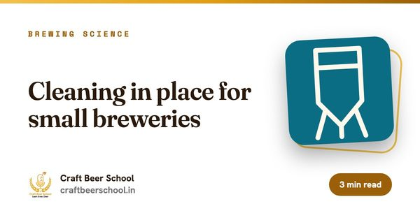
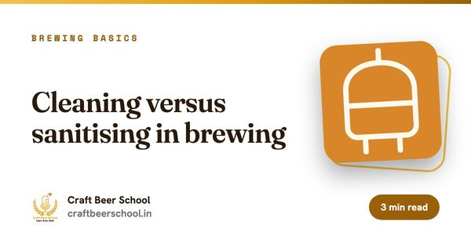

फॉरमॅटऑनलाइन
कालावधी1 आठवडा
सेशन्स2 लाइव्ह, प्रत्येकी 2 तास
बॅचजास्तीत जास्त 20
फीमोफत
हे कोणासाठी आहे
हा course तुमच्यासाठी आहे का?
- brewery किंवा brewpub मध्ये काम सुरू करणारा कोणीही
- नवीन brewhouse उभारणारे किंवा नव्या कर्मचाऱ्यांना training देणारे मालक
- मोठ्या kit कडे वळणारे homebrewers
कोर्सच्या शेवटी
तुम्ही काय घेऊन जाल.
- breweries मध्ये लोकांना इजा करणारे धोके ते घडण्याआधीच ओळखा
- CO2, cleaning chemicals आणि गरम द्रव सुरक्षितपणे हाताळा
- कोणत्या टँक किंवा vessel मध्ये कधीच आत जायचं नाही ते जाणा
- तुमच्या स्वतःच्या brewery साठी safety checklist घेऊन जा
तुमचे इन्स्ट्रक्टर आणि संपर्क व्यक्ती
हा course कोण शिकवते, आणि कोणाला विचारायचे.

अभ्यासक्रम
आठवड्यागणिक.
1 आठवडा. दर वीकेंडला दोन लाइव्ह सेशन्स आणि दर आठवड्याला एक assignment.
आठवडा 01. धोके आणि त्यांच्याभोवती सुरक्षित काम कसं करायचं
- fermenting बिअरमधला CO2: तो खाली का साचतो, आणि cellars व cold rooms मधले gas monitors
- Confined spaces: टँकमध्ये कधीच उतरू नका, आणि का
- cleaning साठी caustic आणि acid, योग्य protective kit, आणि eyewash
- गरम wort आणि वाफ, pressure vessels, kegs आणि relief valves
- ओली जमीन, पाण्याजवळची वीज, आणि malt ची जड पोती उचलणं
- आणीबाणीत काय करायचं, first aid आणि कोणाला फोन करायचा. नियम राज्यानुसार बदलतात, म्हणून तुम्हाला लागू होणारे नियम तपासा
Assignment: तुमच्या brewery किंवा किचनमध्ये फिरा आणि आम्ही दिलेली safety checklist भरा.
हे कसं चालतं
स्वरूप आणि अटी.
- वेळापत्रक
- शनिवार आणि रविवारी live, 12:00 PM ते 2:00 PM IST. Cohort शी परस्पर संमतीने वेळ बदलू शकते.
- Batch चा आकार
- जास्तीत जास्त 20 विद्यार्थी, त्यामुळे प्रत्येक प्रश्नाला उत्तर मिळते.
- समाविष्ट
- सत्रांचे recordings, presentation decks, आठवड्याचे assignments आणि learning kit.
- प्रमाणपत्र
- सगळे assignments जमा केल्यावर आणि किमान 80% live सत्रांना हजर राहिल्यावर Certificate of Completion.
- Screen च्या पलीकडे
- सुचवलेल्या microbrewery भेटी, म्हणजे तुम्ही ज्या kit चा अभ्यास करत आहात ते प्रत्यक्ष पाहता येते.
- फी
- मोफत. पुढच्या बॅचमधल्या 20 पैकी एक जागा राखण्यासाठी नोंदणी करा.
पूर्ण flight हवी आहे? सगळे 22 courses मिळून 61 आठवडे चालतात, आणि प्रवेश घेताना तुम्ही तुमचे package निवडता. सगळ्या 22 courses ची तुलना करा, आणि पैसे भरण्याआधी refund policy वाचा.
वाचत राहा
सुरुवात करण्याआधी वाचा

ब्रूइंग विज्ञान
छोट्या breweries साठी cleaning in place
बहुतेक infections घाणेरड्या brewery मधून येत नाहीत. ती स्वच्छ दिसणाऱ्या brewery मधून येतात.

ब्रूइंगच्या मूलभूत गोष्टी
brewing मध्ये cleaning विरुद्ध sanitising
Cleaning आणि sanitising एकाच कामात गणले जातात. पण रासायनिकदृष्ट्या ही वेगळी कामं आहेत, आणि क्रम चुकला तर दोन्ही वाया जातात.

बिझनेस
Brewery compliance checklist
Brewery ला लागणारे सगळे एकाच office मधून मिळत नाही. संपूर्ण यादी इथे आहे, गटांमध्ये, म्हणजे कशासाठी कोणाला फोन करायचा ते कळेल.
वाचण्यासारखं
या course ची सगळी गाइड.
हा course ज्या विषयांवर आहे त्यावरची 5 मोफत गाइड. पहिल्या सत्राआधी यातले कोणतेही वाचा.
Brewing चं विज्ञान 2
चाखणी 1
Brewing च्या मूलभूत गोष्टी 1
Safety in Brewing मध्ये तुमची जागा राखून ठेवा.
प्रत्येक cohort मध्ये जास्तीत जास्त 20. आत्ताच प्रवेश घ्या किंवा WhatsApp वर विचारा.